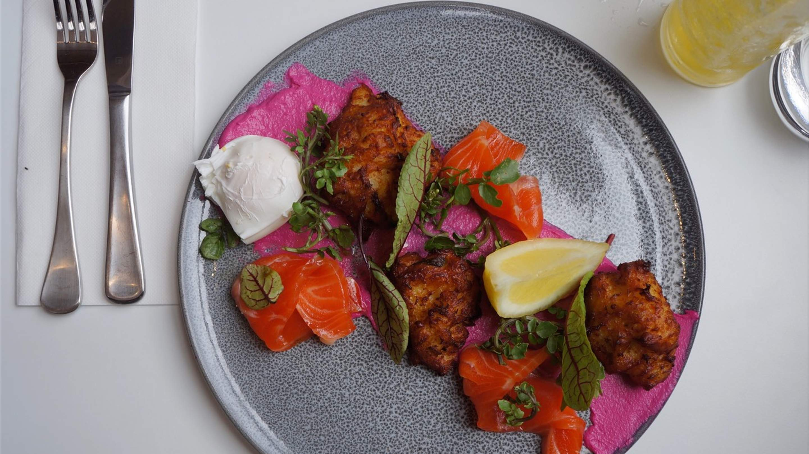
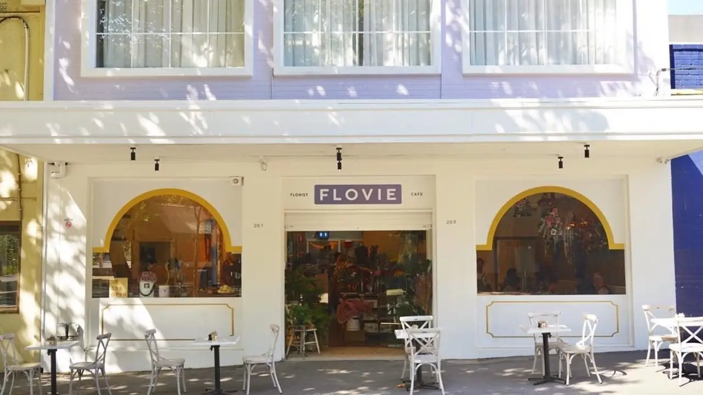
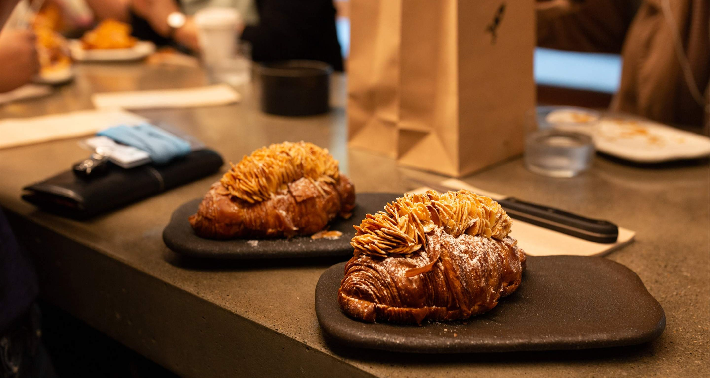
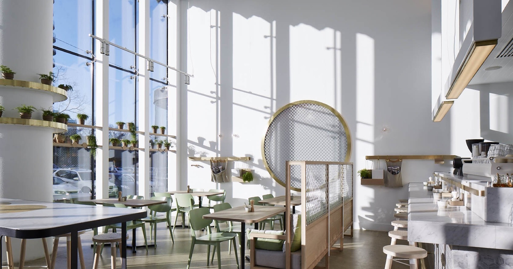
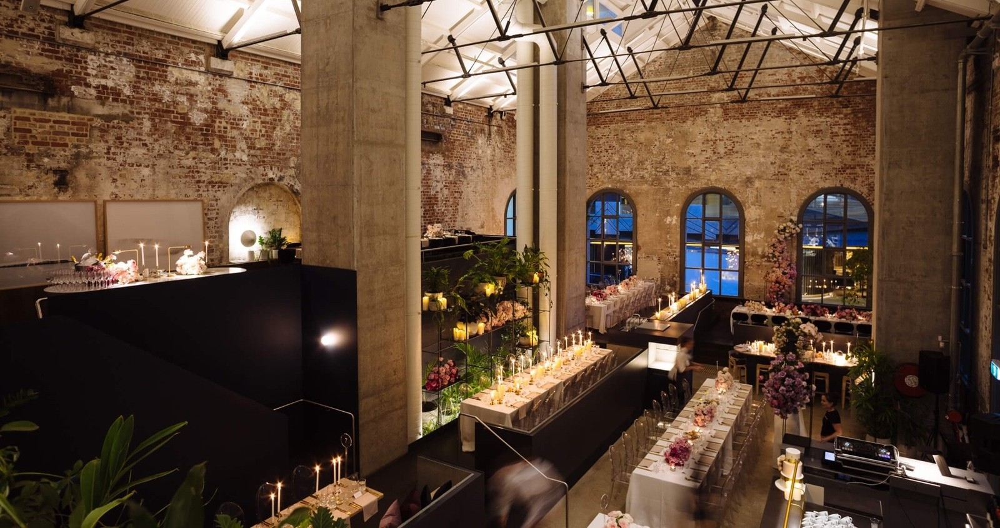
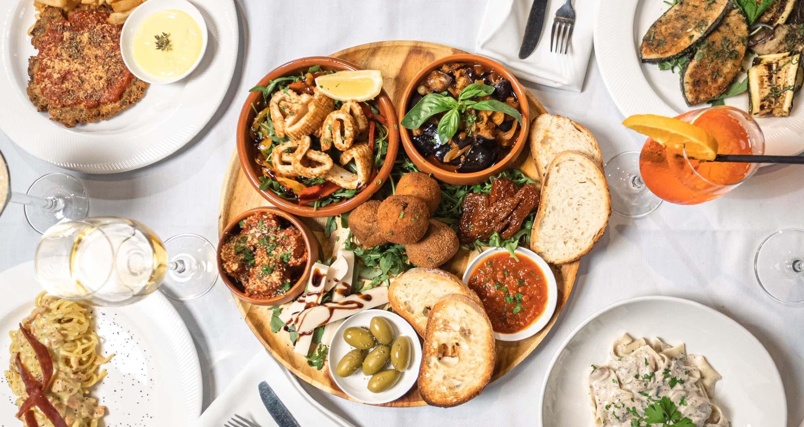

Discover pretty Melbourne cafés and restaurants for brunch dates, family meals, catch-ups and special occasions.
Prices are approximate and may vary by season, menu changes or restaurant updates.

Moby 3143
Modern brunch cafeVegetarian optionsMedium budget
Moby 3143 is a modern Armadale cafe with a relaxed brunch atmosphere, warm interiors and a stylish neighbourhood feel. It is a great spot for coffee, breakfast, lunch or a casual catch-up without feeling too formal. The space feels soft, friendly and easygoing, making it suitable for students, friends and relaxed brunch dates.
Menu highlights: Sourdough Toast $12, Eggs on Toast $15, Chilli Scrambled Eggs $24
Best for: Casual brunch, coffee catch-ups, students, friends, relaxed dates
Average price: $35 per person | Deposit: $10
Reserve

Flovie Florist Cafe
Floral Asian brunchVegetarian optionsMedium budget
Flovie Florist Cafe is a florist cafe in Carlton with flowers, warm interiors and Asian-fusion brunch. The space feels soft, personal and decorative, making it a lovely choice for coffee dates, quiet catch-ups and relaxed brunch plans. It is ideal for anyone looking for a calm and pretty place without feeling too formal.
Menu highlights: Chilli Scrambled Eggs $24, Matcha Hotcake $25, Iced Strawberry Matcha $9
Best for: Floral brunch, coffee dates, friends’ catch-ups, calm aesthetic dining
Average price: $35 per person | Deposit: $10
Reserve

Lune Croissanterie
Bakery cafeSweet menuLow budget
Lune Croissanterie is a popular Melbourne bakery cafe known for croissants, pastries and simple coffee stops. It is a good low-budget option for students, quick cafe visits and dessert dates. The menu is simple, sweet and easy to enjoy, making it perfect for anyone who wants something light instead of a full restaurant meal.
Menu highlights: Classic Croissant $7, Pain au Chocolat $8, Almond Croissant $10
Best for: Pastries, quick cafe visits, students, dessert dates
Average price: $25 per person | Deposit: $5
Reserve

The Kettle Black
Modern Australian brunchVegetarian optionsMedium budget
The Kettle Black is a South Melbourne all-day cafe with a clean, classy brunch atmosphere. It is a nice choice for families, tourists and casual dates because the menu includes familiar breakfast dishes, coffee and lighter meals. The space feels polished but still relaxed, making it suitable for both everyday brunch and small celebrations.
Menu highlights: Hotcake $23, Bircher Muesli $15, Seasonal Avocado $13.50
Best for: Classy brunch, family breakfast, tourists, casual dates
Average price: $35 per person | Deposit: $10
Reserve

Higher Ground
Modern AustralianVegetarian optionsHigh budget
Higher Ground is an all-day Melbourne dining venue inside a beautiful heritage-style space. It has a more elegant brunch atmosphere, making it a good choice for tourists, family dining and business catch-ups. The restaurant feels more premium than a small cafe, so it works well for people who want a nicer dining experience.
Menu highlights: Eggs on Sourdough $15, Sourdough Toast $12, French Fries $14
Best for: Elegant brunch, family dining, business brunch, tourists
Average price: $45 per person | Deposit: $15
Reserve

Funghi e Tartufo
Vegan ItalianVeganHigh budget
Funghi e Tartufo is a plant-based Italian restaurant in Melbourne with a cosy and intimate dining feel. It is a strong choice for vegan diners, romantic dinners and special occasions. The menu focuses on Italian comfort food, making it a warm option for people who want something different from a regular brunch cafe.
Menu highlights: Arancine Funghi e Tartufo $19, Pappardelle Funghi e Tartufo $36, Lasagne $36
Best for: Vegan dining, romantic dinners, special occasions, cosy date nights
Average price: $55 per person | Deposit: $15
Reserve